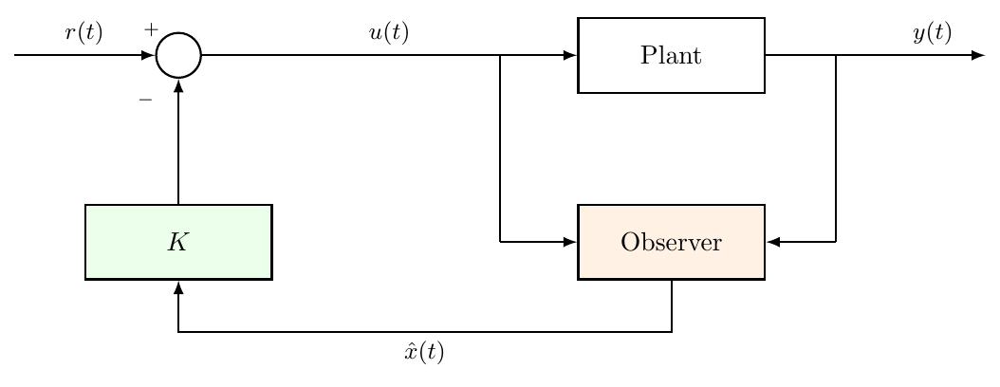
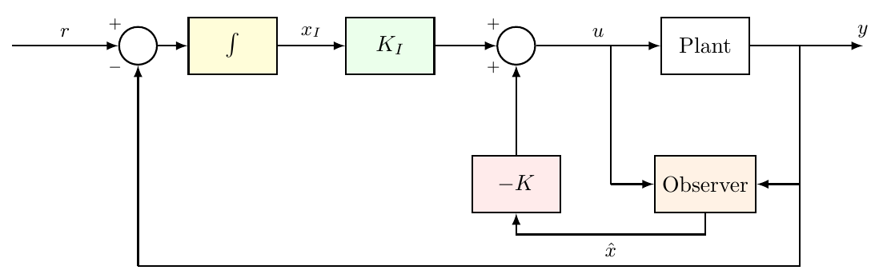
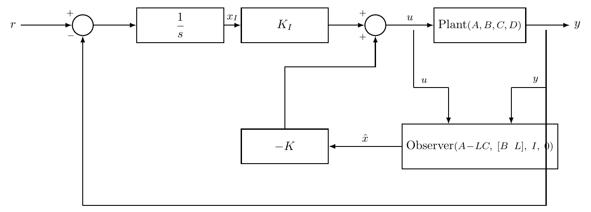
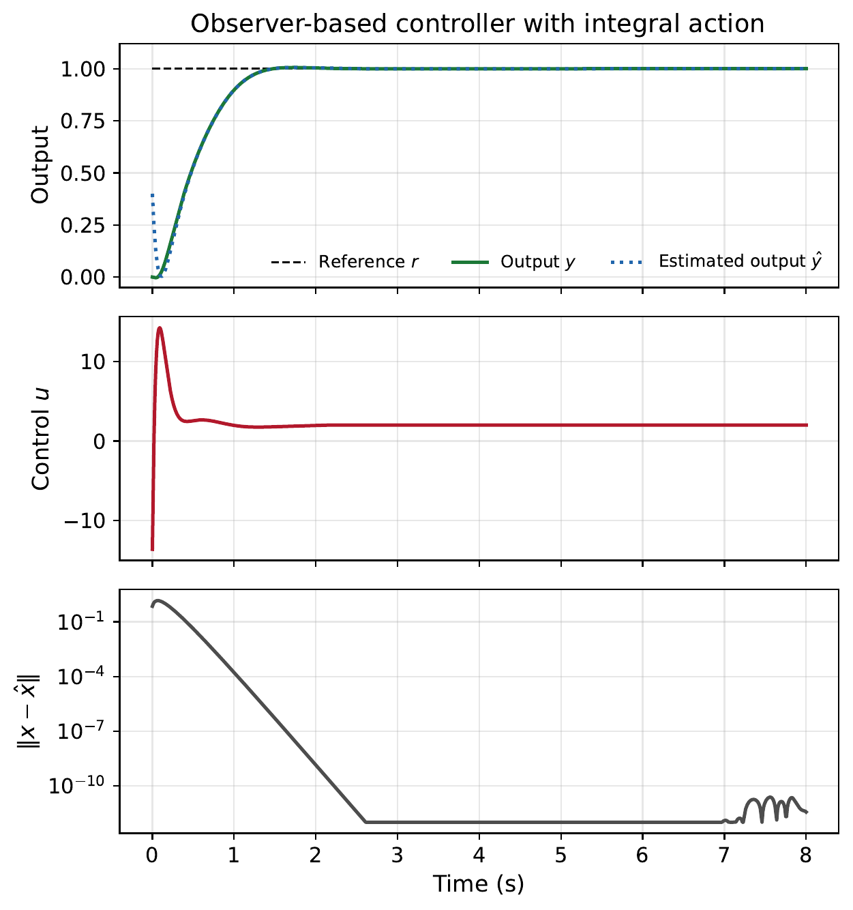
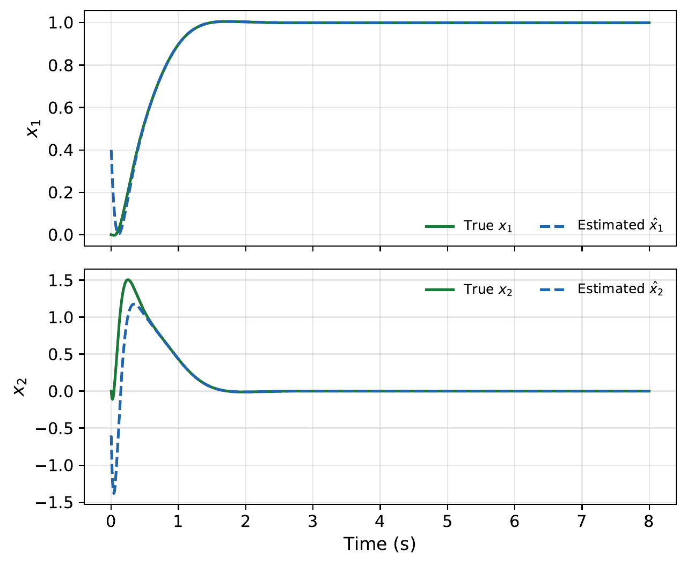

“You cannot control what you cannot see — but you can build a system that sees for you.”
State feedback requires measuring the full state vector \(x(t)\), but in practice this is rarely possible. A DC motor controller may measure shaft position but not armature current; a robot may measure joint angles but not velocities.
The solution is an observer (state estimator): a dynamic system that runs in parallel with the plant and produces an estimate \(\hat{x}(t)\) from the measured output \(y(t)\) and known input \(u(t)\).
Learning Objectives After completing this chapter, you should be able to:
Explain why observers are needed and state the observability condition for their existence.
Derive the Luenberger observer equation and its error dynamics.
Compute the observer gain \(L\) by pole placement using the duality with state feedback.
Apply the separation principle to combine observer and state feedback independently.
Design an observer controller with integral action for zero steady-state error.
Implement and simulate the complete design in MATLAB and Simulink.
Consider a plant in state-space form: \[\begin{equation} \dot{x}(t) = Ax(t) + Bu(t), \qquad y(t) = Cx(t). \label{eq:plant_obs} \end{equation}\]
We know the matrices \(A\), \(B\), \(C\) (from our model) and we can measure \(u(t)\) and \(y(t)\). We want to reconstruct \(x(t)\).
The simplest idea is to build a copy of the plant and run it in parallel: \[\begin{equation} \dot{\hat{x}}(t) = A\hat{x}(t) + Bu(t). \label{eq:open_loop_estimator} \end{equation}\]
If we knew the exact initial condition \(\hat{x}(0) = x(0)\) and the model were perfect, then \(\hat{x}(t) = x(t)\) for all time.
We never know the exact initial condition, and models are never perfect. Define the estimation error: \[e(t) = x(t) - \hat{x}(t).\] Subtracting the open-loop estimator equation from the plant equation gives: \[\dot{e}(t) = Ae(t).\]
The error follows the plant’s own dynamics. If the plant is stable, the error decays — but only as fast as the plant’s slowest pole. If the plant is unstable, the error grows without bound.
The open-loop estimator works only if the plant is stable and we are patient. In control engineering, we need the estimate to converge fast — much faster than the plant itself. This is what the luenberger achieves.
David G. Luenberger.
Photo: Stanford Engineering.
The observer is named after David G. Luenberger, whose early work helped establish the modern state-observer framework. In his 1964 paper, he showed how the full state vector of a linear system can be reconstructed from measured inputs and outputs; his 1971 survey then organised the main observer ideas in a form that became standard in control engineering .
The key insight is to use the measured output \(y(t)\) to correct the estimate. At each instant, we compare the actual output \(y(t)\) with the predicted output \(\hat{y}(t) = C\hat{x}(t)\). The difference \(y - \hat{y}\) tells us how wrong our estimate is. We feed this correction back through a gain matrix \(L\):
\[\begin{equation} \dot{\hat{x}}(t) = A\hat{x}(t) + Bu(t) + L\bigl(y(t) - C\hat{x}(t)\bigr) \label{eq:luenberger} \end{equation}\] where \(L \in \mathbb{R}^{n \times 1}\) is the observer gain vector.
The observer equation has three terms:
\(A\hat{x} + Bu\): the model prediction (same as the open-loop estimator),
\(L(y - C\hat{x})\): the correction term, which pushes \(\hat{x}\) towards \(x\) whenever the output prediction is wrong.

The estimation error \(e(t) = x(t) - \hat{x}(t)\) satisfies: \[\begin{align} \dot{e}(t) &= \dot{x}(t) - \dot{\hat{x}}(t) \notag \\ &= \bigl[Ax + Bu\bigr] - \bigl[A\hat{x} + Bu + L(Cx - C\hat{x})\bigr] \notag \\ &= (A - LC)\,e(t). \label{eq:error_dynamics} \end{align}\]
The error dynamics are governed by the eigenvalues of \(A - LC\), which determine how fast the estimation error decays.
If the eigenvalues of \(A - LC\) all have negative real parts, then \(e(t) \to 0\) as \(t \to \infty\), regardless of the initial error \(e(0) = x(0) - \hat{x}(0)\).
Choose \(L\) so that \(A - LC\) has eigenvalues at desired locations — the same type of pole placement problem we solved for \(K\) in Chapter 11.
Recall from Chapter 10 that a system is observable if and only if the observability matrix \[\mathcal{O} = \begin{bmatrix} C \\ CA \\ CA^2 \\ \vdots \\ CA^{n-1} \end{bmatrix}\] has full rank. The following result is the observer counterpart of the controllability condition for pole placement:
The eigenvalues of \(A - LC\) can be placed at arbitrary locations if and only if the pair \((A, C)\) is observable.
Compare with state feedback: \(K\) places eigenvalues of \(A - BK\) (requires controllability of \((A,B)\)), while \(L\) places eigenvalues of \(A - LC\) (requires observability of \((A,C)\)). The duality between controllability and observability from Chapter 10 is at work here.
A practical rule of thumb:
Observer pole placement guideline Place the observer poles \(3\)–\(5\) times faster (further left in the \(s\)-plane) than the controller poles.
The observer must converge before the controller can act effectively. Too slow, and the controller acts on a poor estimate. Too fast, and the large gains in \(L\) amplify sensor noise.
Choose the desired observer poles \(\lambda_1, \lambda_2, \dots, \lambda_n\).
Form the desired characteristic polynomial: \(\alpha_d(s) = (s - \lambda_1)(s - \lambda_2)\cdots(s - \lambda_n)\).
Compute \(\det(sI - A + LC)\) symbolically in terms of the unknown entries of \(L\).
Match coefficients with \(\alpha_d(s)\) and solve for \(L\).
By duality (Chapter 10), \((A, C)\) observable means \((A^\top, C^\top)\) is controllable, so we can compute \(L\) via: \[L = \texttt{place}(A^\top, C^\top, p_{\text{obs}})^\top\] where \(p_{\text{obs}}\) is the vector of desired observer poles.
The following MATLAB code shows how to compute the observer gain using the duality trick.
Computing the observer gain in MATLAB
import numpy as np
import control as ctrl
A = np.array([[0, 1], [-2, -3]])
B = np.array([[0], [1]])
C = np.array([[1, 0]])
# Controller poles (desired closed-loop)
pc = [-3.5+3.57j, -3.5-3.57j]
K = ctrl.place(A, B, pc)
# Observer poles (3-5x faster)
po = [-15, -16]
L = ctrl.place(A.T, C.T, po).T
# Verify eigenvalues
print("Observer eigenvalues:", np.linalg.eigvals(A - L @ C))A = [0 1; -2 -3];
B = [0; 1];
C = [1 0];
% Controller poles (desired closed-loop)
pc = [-3.5+3.57j, -3.5-3.57j];
K = place(A, B, pc);
% Observer poles (3-5x faster)
po = [-15, -16];
L = place(A', C', po)';
% Verify eigenvalues
eig(A - L*C)Luenberger observer for a mass–spring–damper
Consider the mass–spring–damper system from Chapter 11: \[A = \begin{bmatrix} 0 & 1 \\ -2 & -3 \end{bmatrix}, \quad B = \begin{bmatrix} 0 \\ 1 \end{bmatrix}, \quad C = \begin{bmatrix} 1 & 0 \end{bmatrix}.\]
Only the position \(y = x_1\) is measured. The velocity \(x_2\) is not directly available.
Step 1: Check observability. \[\mathcal{O} = \begin{bmatrix} C \\ CA \end{bmatrix} = \begin{bmatrix} 1 & 0 \\ 0 & 1 \end{bmatrix}, \qquad \text{rank}(\mathcal{O}) = 2 = n. \quad \checkmark\]
Step 2: Choose observer poles. Suppose the controller poles are at \(s = -3.5 \pm j3.57\) (from Chapter 11). We choose observer poles \(4\times\) faster: \[\lambda_{1,2} = -15, \; -16.\]
Step 3: Compute \(L\). The characteristic polynomial of \(A - LC\) is: \[\det(sI - A + LC) = s^2 + (3 + l_1)s + (2 + l_2 + 3l_1).\] The desired polynomial is: \[(s + 15)(s + 16) = s^2 + 31s + 240.\] Matching coefficients: \[3 + l_1 = 31 \implies l_1 = 28, \qquad 2 + l_2 + 3 \times 28 = 240 \implies l_2 = 154.\] Therefore: \[L = \begin{bmatrix} 28 \\ 154 \end{bmatrix}.\]
Step 4: Verify. \[A - LC = \begin{bmatrix} 0 & 1 \\ -2 & -3 \end{bmatrix} - \begin{bmatrix} 28 \\ 154 \end{bmatrix}\begin{bmatrix} 1 & 0 \end{bmatrix} = \begin{bmatrix} -28 & 1 \\ -156 & -3 \end{bmatrix}.\] Eigenvalues: \(-15\) and \(-16\). \(\checkmark\)
Can we simply replace \(x\) with \(\hat{x}\) in the feedback law \(u = -Kx + r\)?
\[\begin{equation} u(t) = -K\hat{x}(t) + r(t) \label{eq:output_feedback} \end{equation}\]
Yes, and this is guaranteed by the separation principle:
When the observer-based control law is applied to the plant, the closed-loop characteristic polynomial is: \[\det(sI - A + BK) \cdot \det(sI - A + LC).\] The closed-loop poles are the union of the controller poles and the observer poles. The two designs do not interact.
Proof sketch. Define \(e = x - \hat{x}\). The closed-loop system in the coordinates \((x, e)\) is: \[\begin{bmatrix} \dot{x} \\ \dot{e} \end{bmatrix} = \underbrace{\begin{bmatrix} A - BK & BK \\ 0 & A - LC \end{bmatrix}}_{\text{block upper-triangular}} \begin{bmatrix} x \\ e \end{bmatrix} + \begin{bmatrix} B \\ 0 \end{bmatrix} r.\]
Because the matrix is block upper-triangular, its eigenvalues are those of \(A - BK\) together with those of \(A - LC\). The controller poles and observer poles are completely decoupled.
The separation principle means we can design the controller and observer independently, and the combined system will have exactly the poles we intended.
The observer error \(e(t)\) converges to zero with its own dynamics (\(A - LC\)). Once \(\hat{x} \approx x\), the controller behaves as if it had full state measurement. The transient caused by the initial estimation error affects performance briefly, but the steady-state behaviour is identical to the full-state-feedback case.
The complete design procedure is:
Model: obtain the state-space model \((A, B, C)\).
Check controllability: verify \(\text{rank}(\mathcal{C}) = n\).
Check observability: verify \(\text{rank}(\mathcal{O}) = n\).
Design state feedback: choose desired controller poles \(p_c\), then compute the gain \[K=\operatorname{place}(A,B,p_c).\]
Design observer: choose desired observer poles \(p_o\) (\(3\)–\(5\times\) faster than \(p_c\)) and compute \(L = \texttt{place}(A', C', p_o)'\).
Combine: implement the control law \(u = -K\hat{x} + r\) with the observer running in parallel.
Simulate and verify.
Complete observer-based controller for the mass–spring–damper
Consider the mass–spring–damper from Chapter 11 with the transfer function \(G(s) = \dfrac{1}{s^2 + 3s + 2}\).
State-space form (controllable canonical form): \[A = \begin{bmatrix} 0 & 1 \\ -2 & -3 \end{bmatrix}, \quad B = \begin{bmatrix} 0 \\ 1 \end{bmatrix}, \quad C = \begin{bmatrix} 1 & 0 \end{bmatrix}.\]
Specifications: settling time \(t_s \leq 2\) s, overshoot \(\leq 10\%\).
From Chapter 6, these translate to \(\zeta \geq 0.59\) and \(\sigma \geq 2\). We choose controller poles at \(s = -3 \pm j3\) (giving \(\zeta = 0.71\), \(\sigma = 3\)).
Controller gain: \[K = \texttt{place}(A, B, [-3+3j,\; -3-3j]) = \begin{bmatrix} 16 & 3 \end{bmatrix}.\]
Observer gain (poles \(4\times\) faster, at \(-12\) and \(-13\)): \[L = \texttt{place}(A', C', [-12, -13])' = \begin{bmatrix} 22 \\ 88 \end{bmatrix}.\]
MATLAB simulation: The following code builds the composite closed-loop system and plots the step response.
Observer-based state feedback: closed-loop simulation
import numpy as np
import matplotlib.pyplot as plt
import control as ctrl
A = np.array([[0, 1], [-2, -3]]); B = np.array([[0], [1]]); C = np.array([[1, 0]]); D = 0
K = ctrl.place(A, B, [-3+3j, -3-3j])
L = ctrl.place(A.T, C.T, [-12, -13]).T
# Closed-loop system with observer
Acl = np.block([[A - B @ K, B @ K], [np.zeros((2, 2)), A - L @ C]])
Bcl = np.vstack([B, np.zeros((2, 1))])
Ccl = np.hstack([C, np.zeros((1, 2))])
sys_cl = ctrl.ss(Acl, Bcl, Ccl, 0)
_resp = ctrl.step_response(sys_cl)
t, y = _resp.time, _resp.outputs
plt.plot(t, y)
plt.title('Observer-based state feedback')
plt.grid(True)A = [0 1; -2 -3]; B = [0; 1]; C = [1 0]; D = 0;
K = place(A, B, [-3+3j, -3-3j]);
L = place(A', C', [-12, -13])';
% Closed-loop system with observer
Acl = [A-B*K, B*K; zeros(2), A-L*C];
Bcl = [B; zeros(2,1)];
Ccl = [C, zeros(1,2)];
sys_cl = ss(Acl, Bcl, Ccl, 0);
step(sys_cl);
title('Observer-based state feedback');Without an integrator in the loop, the observer-based controller does not guarantee zero steady-state error for step references. The solution combines three ingredients:
Observer: estimates the state \(\hat{x}\) from \(y\) and \(u\).
State feedback: stabilises the system and shapes the transient response.
Integral action: eliminates steady-state error.
Recall from Chapter 11 that integral action introduces an additional state: \[\dot{x}_I(t) = r(t) - y(t) = r(t) - Cx(t).\]
The control law is: \[\begin{equation} u(t) = -K\hat{x}(t) + K_I\, x_I(t) \label{eq:obs_integral_law} \end{equation}\] where \(\hat{x}\) comes from the observer and \(x_I\) is computed directly from the measured output (no estimation needed — \(y\) is measured).

Design the augmented state feedback (as in Chapter 11):
Form the augmented system with states \(\bar{x} = [x^\top \;\; x_I]^\top\).
Choose \(n+1\) desired controller poles.
Compute \(\bar{K} = [K \;\; {-K_I}]\) using place() on the augmented system.
Design the observer (on the original, non-augmented system):
Choose \(n\) observer poles (\(3\)–\(5\times\) faster).
Compute \(L = \texttt{place}(A', C', p_o)'\).
Implement: the observer estimates \(\hat{x}\); the integrator uses the measured \(y\) directly; the control law is \(u = -K\hat{x} + K_I x_I\).
The integral state \(x_I\) does not need to be estimated — it is computed from the measured output \(y(t)\). Therefore, the observer is designed for the original \(n\)-state system, not the augmented \((n+1)\)-state system.
Observer-based controller with integral action
Continuing the DC motor example with \(A = \left[\begin{smallmatrix} 0 & 1 \\ -2 & -3 \end{smallmatrix}\right]\), \(B = \left[\begin{smallmatrix} 0 \\ 1 \end{smallmatrix}\right]\), \(C = \left[\begin{smallmatrix} 1 & 0 \end{smallmatrix}\right]\).
Augmented system (from Chapter 11): \[\bar{A} = \begin{bmatrix} 0 & 1 & 0 \\ -2 & -3 & 0 \\ -1 & 0 & 0 \end{bmatrix}, \quad \bar{B} = \begin{bmatrix} 0 \\ 1 \\ 0 \end{bmatrix}.\]
Controller poles: \(-3 \pm j3\) and \(-5\) (the extra pole for the integrator state). \[\bar{K} = \texttt{place}(\bar{A}, \bar{B}, [-3+3j,\; -3-3j,\; -5]) = \begin{bmatrix} K_1 & K_2 & -K_I \end{bmatrix}.\] Numerically, this gives \(\bar{K} = \begin{bmatrix} 46 & 8 & -90 \end{bmatrix}\), so \(K = \begin{bmatrix} 46 & 8 \end{bmatrix}\) and \(K_I = 90\).
Observer poles: \(-12\) and \(-13\) (same as before — the observer sees the original 2-state system). \[L = \texttt{place}(A', C', [-12,\; -13])' = \begin{bmatrix} 22 \\ 88 \end{bmatrix}.\]
MATLAB code: The following code computes the state feedback, integral, and observer gains.
Computing gains for observer-based control with integral action
import numpy as np
import control as ctrl
A = np.array([[0, 1], [-2, -3]]); B = np.array([[0], [1]]); C = np.array([[1, 0]])
n = A.shape[0]
# Augmented system for integral action
Abar = np.block([[A, np.zeros((n, 1))], [-C, np.zeros((1, 1))]])
Bbar = np.vstack([B, np.array([[0]])])
# Controller poles (n+1 = 3 poles)
pc = [-3+3j, -3-3j, -5]
Kbar = ctrl.place(Abar, Bbar, pc)
K = Kbar[0, 0:n] # state feedback gains
KI = -Kbar[0, n] # integral gain
# Observer poles (n = 2 poles)
po = [-12, -13]
L = ctrl.place(A.T, C.T, po).T
print("K = [%.2f %.2f]" % (K[0], K[1]))
print("KI = %.2f" % KI)
print("L = [%.2f; %.2f]" % (L[0, 0], L[1, 0]))A = [0 1; -2 -3]; B = [0; 1]; C = [1 0];
n = size(A,1);
% Augmented system for integral action
Abar = [A, zeros(n,1); -C, 0];
Bbar = [B; 0];
% Controller poles (n+1 = 3 poles)
pc = [-3+3j, -3-3j, -5];
Kbar = place(Abar, Bbar, pc);
K = Kbar(1:n); % state feedback gains
KI = -Kbar(n+1); % integral gain
% Observer poles (n = 2 poles)
po = [-12, -13];
L = place(A', C', po)';
fprintf('K = [%.2f %.2f]\n', K);
fprintf('KI = %.2f\n', KI);
fprintf('L = [%.2f; %.2f]\n', L);MATLAB: Simulating the complete observer-based controller
We now simulate the full closed-loop system with observer, state feedback, and integral action for the mass–spring–damper. The closed-loop state vector is \(\begin{bmatrix} x^\top & \hat{x}^\top & x_I \end{bmatrix}^\top\) (5 states in total). The following code builds the composite system matrices and uses step() to verify the response.
Full simulation of observer-based control with integral action
import numpy as np
import matplotlib.pyplot as plt
import control as ctrl
A = np.array([[0, 1], [-2, -3]]); B = np.array([[0], [1]]); C = np.array([[1, 0]]); D = 0
n = A.shape[0]
# Augmented system for integral action
Abar = np.block([[A, np.zeros((n, 1))], [-C, np.zeros((1, 1))]])
Bbar = np.vstack([B, np.array([[0]])])
# State feedback + integral gain (3 controller poles)
pc = [-3+3j, -3-3j, -5]
Kbar = ctrl.place(Abar, Bbar, pc)
K = Kbar[0:1, 0:n] # K = [46 8]
KI = -Kbar[0, n] # KI = 90
# Observer gain (2 observer poles, 4x faster)
po = [-12, -13]
L = ctrl.place(A.T, C.T, po).T # L = [22; 88]
# Closed-loop in coordinates [x; xhat; xI]
# dx = A*x + B*u, u = -K*xhat + KI*xI
# dxhat = (A-LC)*xhat + B*u + L*C*x
# dxI = r - C*x
Acl = np.block([
[A, -B @ K, B * KI], # dx/dt
[L @ C, A - L @ C - B @ K, B * KI], # dxhat/dt
[-C, np.zeros((1, n)), np.zeros((1, 1))] # dxI/dt
])
Bcl = np.vstack([np.zeros((n, 1)), np.zeros((n, 1)), np.array([[1]])]) # input = r
Ccl = np.hstack([C, np.zeros((1, n)), np.zeros((1, 1))]) # output = y = C*x
Dcl = 0
sys_cl = ctrl.ss(Acl, Bcl, Ccl, Dcl)
print('Closed-loop poles:'); print(np.linalg.eigvals(Acl))
# Step response
T = np.linspace(0, 5, 500)
_resp = ctrl.forced_response(sys_cl, T=T, U=np.ones_like(T), return_x=True)
t, y, xall = _resp.time, _resp.outputs, _resp.states
plt.subplot(2, 1, 1)
plt.plot(t, y.flatten(), 'b', linewidth=1.5)
plt.axhline(1, color='k', linestyle='--')
plt.ylabel('Output y(t)')
plt.title('Observer-based control with integral action')
plt.grid(True)
# True vs estimated states
plt.subplot(2, 1, 2)
plt.plot(t, xall[0, :], 'b', t, xall[2, :], 'r--', linewidth=1.5)
plt.plot(t, xall[1, :], 'b:', t, xall[3, :], 'r:', linewidth=1.5)
plt.legend(['x_1 (true)', 'xhat_1', 'x_2 (true)', 'xhat_2'])
plt.ylabel('States'); plt.xlabel('Time (s)')
plt.title('True vs estimated states')
plt.grid(True)A = [0 1; -2 -3]; B = [0; 1]; C = [1 0]; D = 0;
n = size(A,1);
% Augmented system for integral action
Abar = [A, zeros(n,1); -C, 0];
Bbar = [B; 0];
% State feedback + integral gain (3 controller poles)
pc = [-3+3j, -3-3j, -5];
Kbar = place(Abar, Bbar, pc);
K = Kbar(1:n); % K = [46 8]
KI = -Kbar(n+1); % KI = 90
% Observer gain (2 observer poles, 4x faster)
po = [-12, -13];
L = place(A', C', po)'; % L = [22; 88]
% Closed-loop in coordinates [x; xhat; xI]
% dx = A*x + B*u, u = -K*xhat + KI*xI
% dxhat = (A-LC)*xhat + B*u + L*C*x
% dxI = r - C*x
Acl = [A, -B*K, B*KI; % dx/dt
L*C, A-L*C-B*K, B*KI; % dxhat/dt
-C, zeros(1,n), 0]; % dxI/dt
Bcl = [zeros(n,1); zeros(n,1); 1]; % input = r
Ccl = [C, zeros(1,n), 0]; % output = y = C*x
Dcl = 0;
sys_cl = ss(Acl, Bcl, Ccl, Dcl);
disp('Closed-loop poles:'); disp(eig(Acl));
% Step response
figure;
[y,t,xall] = step(sys_cl, 5);
subplot(2,1,1);
plot(t, y, 'b', 'LineWidth', 1.5); hold on;
yline(1, 'k--'); ylabel('Output y(t)');
title('Observer-based control with integral action');
% True vs estimated states
subplot(2,1,2);
plot(t, xall(:,1), 'b', t, xall(:,3), 'r--', 'LineWidth', 1.5);
hold on;
plot(t, xall(:,2), 'b:', t, xall(:,4), 'r:', 'LineWidth', 1.5);
legend('x_1 (true)','xhat_1','x_2 (true)','xhat_2');
ylabel('States'); xlabel('Time (s)');
title('True vs estimated states');Running this code produces a step response that settles with zero steady-state error (thanks to integral action) and shows the observer estimates converging rapidly to the true states. You should see that the five closed-loop poles are exactly \(\{-3 \pm j3,\; -5,\; -12,\; -13\}\) — confirming the separation principle.
Figure 1.3 shows the Simulink implementation. The key components are:
Plant block: a State-Space block with matrices \(A\), \(B\), \(C\), \(D\).
Observer block: a State-Space block implementing the Luenberger observer equation, with input \([u; y]\) and output \(\hat{x}\).
Integrator block: integrates the error \(r - y\) to produce \(x_I\).
Gain blocks: \(-K\) multiplied by \(\hat{x}\), \(K_I\) multiplied by \(x_I\), summed to form \(u\).

The observer state-space block has the following matrices: \[A_{\text{obs}} = A - LC, \quad B_{\text{obs}} = \begin{bmatrix} B & L \end{bmatrix}, \quad C_{\text{obs}} = I_n, \quad D_{\text{obs}} = 0,\] with input vector \(\begin{bmatrix} u \\ y \end{bmatrix}\) and output \(\hat{x}\). The following MATLAB code sets up these matrices.
Setting up the observer block in MATLAB for Simulink
import numpy as np
A = np.array([[0, 1], [-2, -3]])
B = np.array([[0], [1]])
C = np.array([[1, 0]])
L = np.array([[22], [88]])
n = A.shape[0]
A_obs = A - L @ C
B_obs = np.hstack([B, L]) # inputs: [u; y]
C_obs = np.eye(n) # output: full estimated state
D_obs = np.zeros((n, 2))
# These matrices define the observer state-space block
print("A_obs ="); print(A_obs)
print("B_obs ="); print(B_obs)
print("C_obs ="); print(C_obs)
print("D_obs ="); print(D_obs)A_obs = A - L*C;
B_obs = [B, L]; % inputs: [u; y]
C_obs = eye(n); % output: full estimated state
D_obs = zeros(n, 2);
% Use these in a Simulink State-Space blockFor the DC motor design from the previous section, the Simulink model uses \[K = \begin{bmatrix} 46 & 8 \end{bmatrix}, \qquad K_I = 90, \qquad L = \begin{bmatrix} 22 \\ 88 \end{bmatrix}.\] With a unit-step reference and a nonzero initial observer error, the simulation should produce the responses in Figures 1.4 and 1.5.


What happens when the observer matrices differ from the true plant?
The estimation error \(e(t)\) no longer converges to exactly zero — a small residual error remains.
If integral action is included, the steady-state tracking error is still zero for step references, because the integrator compensates for the model mismatch.
The transient performance degrades, but the system remains stable provided the model errors are not too large.
This is another reason why integral action is essential in practice. Without it, any model error leads to a permanent steady-state offset. With it, the integrator absorbs the mismatch.
Chapter Summary
An observer (Luenberger observer) estimates the unmeasured states from the known input \(u\) and measured output \(y\).
The observer equation is \(\dot{\hat{x}} = A\hat{x} + Bu + L(y - C\hat{x})\).
The estimation error decays according to \(\dot{e} = (A - LC)e\). The gain \(L\) is chosen to place the eigenvalues of \(A - LC\) at desired locations.
Observer design requires observability of \((A, C)\).
Observer poles are typically placed \(3\)–\(5\times\) faster than the controller poles.
The separation principle guarantees that the controller \((K)\) and observer \((L)\) can be designed independently. The closed-loop poles are the union of both sets.
For zero steady-state error, add integral action: \(u = -K\hat{x} + K_I x_I\), where \(\dot{x}_I = r - y\).
MATLAB: L = place(A’, C’, po)’ for the observer gain.
The tools from this module — transfer functions, state-space models, stability analysis, PID tuning, pole placement, observers, and integral action — form the foundation of control engineering. This section briefly introduces directions you may encounter in advanced modules or industry. None are examinable.
In practice, controllers run on digital processors that sample at discrete intervals. Discrete-time control replaces the Laplace transform with the \(z\)-transform and differential equations with difference equations. The design concepts (pole placement, observers, integral action) carry over directly. MATLAB’s c2d() converts continuous-time designs to discrete-time equivalents.
LQR finds the optimal state feedback gain \(K\) by minimising a cost function: \[J = \int_0^\infty \bigl[ x^\top Q\, x + u^\top R\, u \bigr]\,dt,\] where \(Q\) penalises state deviations and \(R\) penalises control effort. LQR produces guaranteed stability margins and avoids trial-and-error pole selection. In MATLAB: K = lqr(A, B, Q, R).
The Luenberger observer assumes deterministic signals. The Kalman filter is the optimal observer for systems with Gaussian noise — it minimises the mean-squared estimation error. It is the dual of LQR: LQR optimises \(K\), the Kalman filter optimises \(L\). Applications include GPS, inertial navigation, robotics, and financial modelling.
Combining LQR with the Kalman filter gives the LQG controller. By the separation principle, the two designs remain independent. LQG is widely used in aerospace, process control, and robotics.
Robust control explicitly accounts for model uncertainty. The \(H_\infty\) framework guarantees stability and performance for all plants within a defined uncertainty set — essential in aerospace and automotive applications requiring worst-case guarantees.
At each time step, MPC solves an optimisation problem over a finite prediction horizon, explicitly handling:
constraints on inputs (actuator limits),
constraints on states and outputs (safety limits),
a cost function balancing tracking performance and control effort.
Only the first control action is applied; the optimisation repeats at the next step. MPC is standard in chemical process control, building energy management, autonomous vehicles, and robotics.
All methods in this module assume linearity. Advanced nonlinear techniques include feedback linearisation, sliding mode control, backstepping, and Lyapunov-based design. Adaptive control adjusts controller parameters online as the plant changes.
Reinforcement learning can discover control policies from interaction with the environment, and neural networks can approximate complex nonlinear dynamics. Safety-critical applications still require model-based guarantees — ML methods are most powerful when combined with the classical foundations from this module.
Every method above builds on the concepts from this module. State-space models, controllability, observability, stability, pole placement, and observers are the language of modern control theory.
Open-loop vs closed-loop observer. Consider \(A = \left[\begin{smallmatrix} 0 & 1 \\ -5 & -6 \end{smallmatrix}\right]\), \(C = \left[\begin{smallmatrix} 1 & 0 \end{smallmatrix}\right]\).
Write the error dynamics for the open-loop estimator (no correction term). What are the eigenvalues?
Now design a Luenberger observer with poles at \(-20\) and \(-25\). Find \(L\).
Compare the convergence speed of both approaches.
Observability check. For each system, determine whether an observer can be designed:
\(A = \left[\begin{smallmatrix} -1 & 0 \\ 0 & -2 \end{smallmatrix}\right]\), \(C = \left[\begin{smallmatrix} 1 & 1 \end{smallmatrix}\right]\).
\(A = \left[\begin{smallmatrix} -1 & 0 \\ 0 & -2 \end{smallmatrix}\right]\), \(C = \left[\begin{smallmatrix} 1 & 0 \end{smallmatrix}\right]\).
\(A = \left[\begin{smallmatrix} 0 & 1 \\ -6 & -5 \end{smallmatrix}\right]\), \(C = \left[\begin{smallmatrix} 0 & 1 \end{smallmatrix}\right]\).
Observer gain computation. Given \(A = \left[\begin{smallmatrix} 0 & 1 \\ -10 & -7 \end{smallmatrix}\right]\), \(B = \left[\begin{smallmatrix} 0 \\ 1 \end{smallmatrix}\right]\), \(C = \left[\begin{smallmatrix} 1 & 0 \end{smallmatrix}\right]\):
Verify observability.
Compute \(L\) so that the observer poles are at \(-30\) and \(-35\).
Verify using MATLAB: L = place(A’, C’, [-30, -35])’.
Separation principle verification. Using the system from Problem 3:
Design \(K\) to place the controller poles at \(-5 \pm j5\).
Design \(L\) to place the observer poles at \(-25\) and \(-30\).
Write the \(4 \times 4\) closed-loop system matrix in coordinates \((x, e)\).
Verify that the eigenvalues are exactly \(\{-5+5j,\; -5-5j,\; -25,\; -30\}\).
Observer-based controller with integral action. For the system \(A = \left[\begin{smallmatrix} 0 & 1 \\ -4 & -5 \end{smallmatrix}\right]\), \(B = \left[\begin{smallmatrix} 0 \\ 1 \end{smallmatrix}\right]\), \(C = \left[\begin{smallmatrix} 1 & 0 \end{smallmatrix}\right]\):
Form the augmented system for integral action.
Compute \(\bar{K} = [K \;\; {-K_I}]\) with controller poles at \(-4 \pm j4\) and \(-6\).
Compute \(L\) with observer poles at \(-20\) and \(-25\).
Simulate the step response in MATLAB. Verify zero steady-state error.
Effect of observer speed. Using the system and controller from Problem 5:
Simulate with observer poles at \(-8\) and \(-10\) (slow observer).
Simulate with observer poles at \(-40\) and \(-50\) (fast observer).
Compare the transient responses. What do you observe about the initial transient?
Discuss the trade-off between convergence speed and noise sensitivity.
Robustness test. Using the design from Problem 5, suppose the true plant has \(A_{true} = \left[\begin{smallmatrix} 0 & 1 \\ -5 & -6 \end{smallmatrix}\right]\) (a \(25\%\) parameter error).
Simulate the step response with the controller designed for the nominal plant.
Is the system still stable?
What happens to the steady-state error? Explain why integral action helps.
MATLAB comprehensive exercise. Consider the third-order system: \[A = \begin{bmatrix} 0 & 1 & 0 \\ 0 & 0 & 1 \\ -6 & -11 & -6 \end{bmatrix}, \quad B = \begin{bmatrix} 0 \\ 0 \\ 1 \end{bmatrix}, \quad C = \begin{bmatrix} 1 & 0 & 0 \end{bmatrix}.\]
Verify controllability and observability.
Design state feedback with poles at \(-4\), \(-5\), \(-6\).
Design an observer with poles at \(-20\), \(-25\), \(-30\).
Add integral action with an additional pole at \(-8\).
Simulate the complete observer-based controller with integral action for a unit step reference.
Plot the true state \(x(t)\) and estimated state \(\hat{x}(t)\) on the same graph. Verify that the estimation error converges quickly.